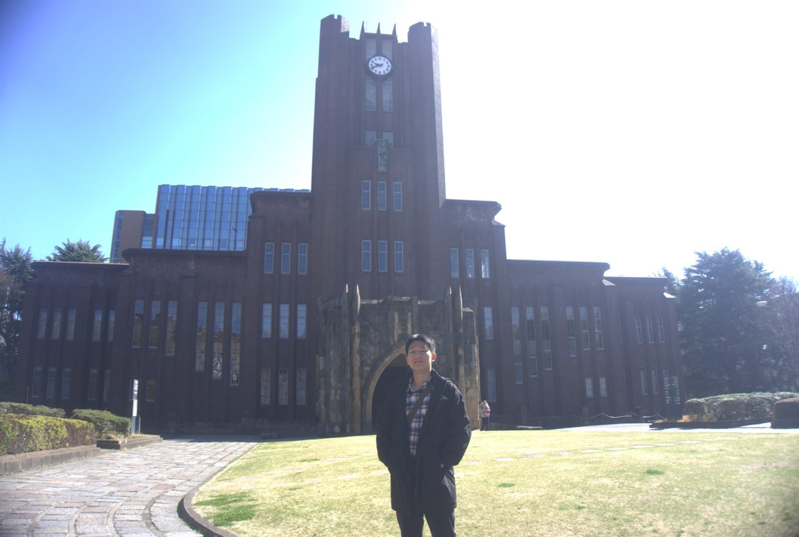
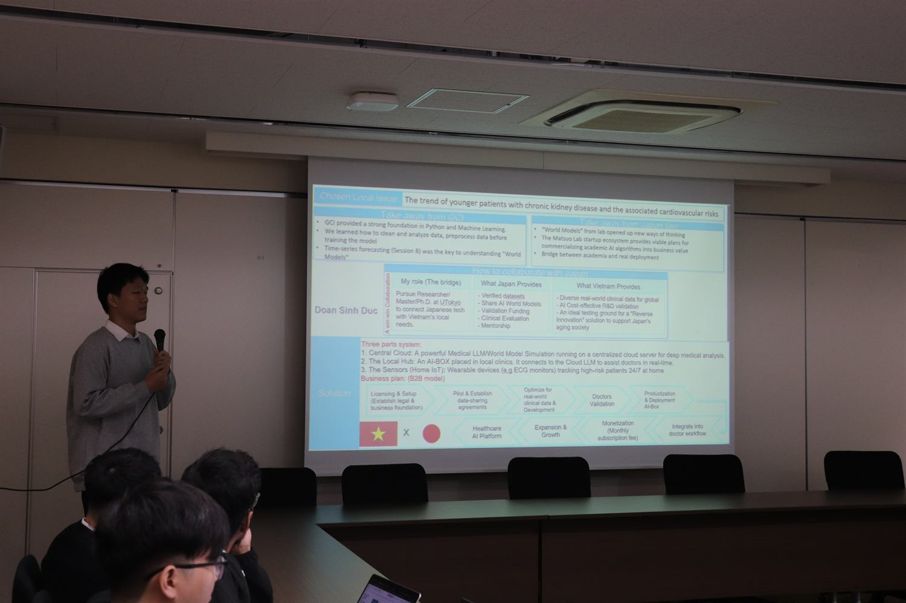
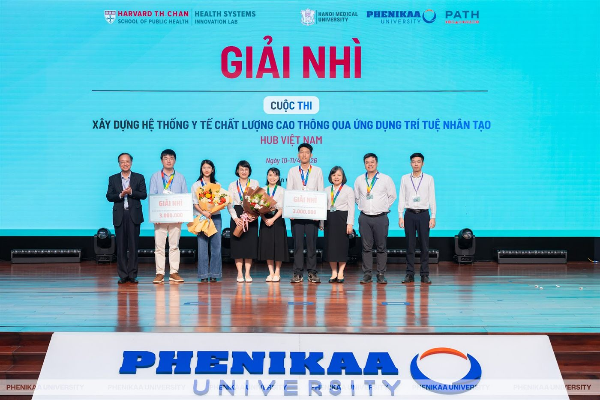
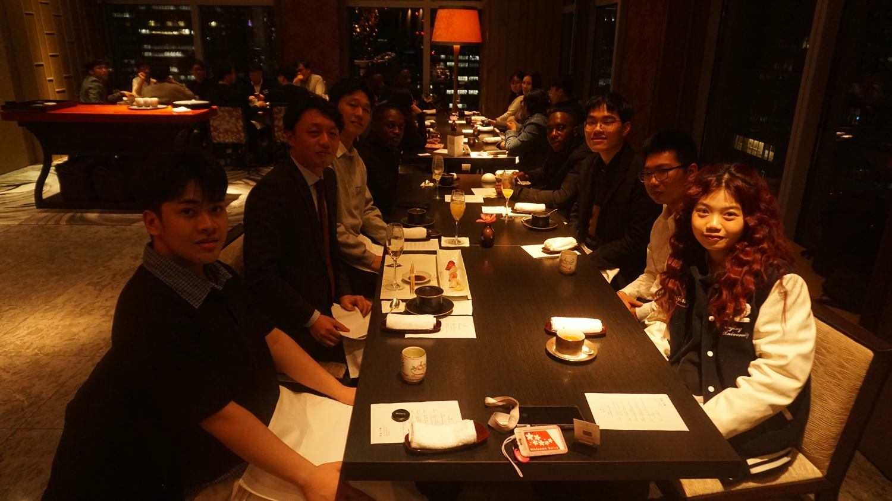

Photo in Yasuda Auditorium
Yasuda Auditorium, The University of Tokyo
A personal milestone from my short-term AI research exchange in Tokyo.
AI systems, biosignals, edge devices
I build compact AI systems that can move from research ideas to real devices: wearable ECG, multi-camera edge vision, and tools that make machine learning useful in messy settings.
Milestones

A personal milestone from my short-term AI research exchange in Tokyo.

Sharing my exchange work and receiving feedback from Matsuo Lab members.

Award moment from the Vietnam Hub of the Harvard Health Systems Innovation Lab hackathon.

A dinner moment with Prof. Matsuo and international peers during the Tokyo exchange.
Selected work
Built a compact SNN autoencoder to reconstruct clinical-style chest ECG from noisy ear-worn signals, using perceptual loss and personalization for wearable monitoring.
A Jetson Nano pipeline for real-time product detection across 16 RTSP streams with DeepStream, TensorRT, Docker, and YOLOv8n.
Open repositoryA four-camera YOLOv8 system with anchor-based mapping to track component states and catch packaging mistakes in real time.
Open repositoryWhat I care about
ECG and PPG are not just arrays. I care about preserving morphology, patient splits, and useful adaptation.
Quantization, inference profiling, and deployment details matter when models must run on devices, not slides.
A good result should be understandable to teammates, mentors, users, and the next person who builds on it.
Now
Researching SNN, KAN, and optimization techniques for ECG, PPG, and efficient AI systems.
Working on RAG support assistants at Viettel Telecom and YOLO inference optimization at HANET Technology.
Supporting Global Consumer Intelligence students with ML concepts, assignments, and remote study sessions.
Contact
I am especially interested in neuromorphic AI, wearable biosignal reconstruction, efficient computer vision deployment, and research ideas that can survive contact with real hardware.